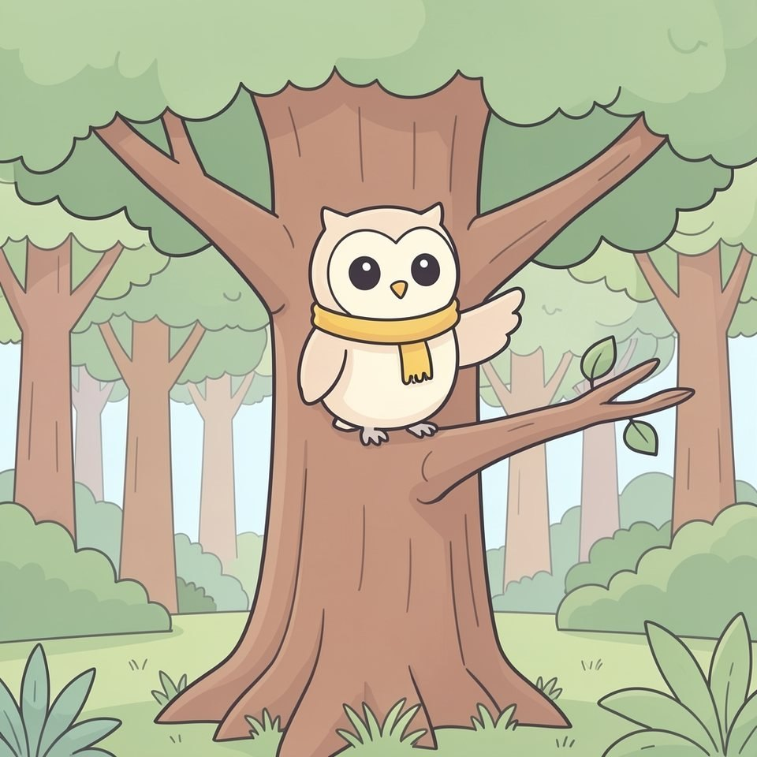

Titistoire › Les Lucioles (1-3 ans)
L'alphabet de Plume
Un imagier pour les tout-petits : l'alphabet.

▶ Écouter et regarder l'histoire
Gratuit, sans inscription : la voix lit, le texte suit mot à mot, les images tournent comme dans un album.
Le texte de l'histoire
Plume connaît toutes les lettres. Tu viens ? On les dit ensemble !
A ! Comme une abeille. Bzzz, bzzz !
B ! Comme un ballon. Il monte, il monte !
C ! Comme un chat. Miaou !
D ! Comme un dinosaure. Boum, boum, il marche !
E ! Comme un éléphant. Pfouuu, fait sa trompe !
F ! Comme une fleur. Hmm, ça sent bon !
G ! Comme un gâteau. On souffle ? Pfff !
H ! Comme un hibou. Hou, hou ! C'est moi, Plume !
I ! Comme une île. Toute petite sur la mer.
J ! Comme une jupe. Elle tourne, elle tourne !
K ! Comme un koala. Il fait un gros câlin.
L ! Comme une lune. Bonne nuit, la lune !
M ! Comme une maison. Toc, toc ! Qui est là ?
N ! Comme un nuage. Il flotte dans le ciel.
O ! Comme un oiseau. Cui, cui, cui !
P ! Comme un poisson. Glou, glou, glou !
Q ! Comme une quiche. Miam, c'est chaud !
R ! Comme un renard. Coucou, Filou !
S ! Comme un soleil. Il chauffe, il brille !
T ! Comme une tortue. Tout… dou… ce… ment.
U ! Comme un ukulélé. Gling, gling, gling !
V ! Comme un vélo. Dring, dring !
W ! Comme un wagon. Tchou, tchou !
X ! Comme un xylophone. Ding, ding, dong !
Y ! Comme un yaourt. Miam, une cuillère !
Z ! Comme un zèbre. Il galope, tagada !
De A jusqu'à Z ! Bravo, tu connais l'alphabet !